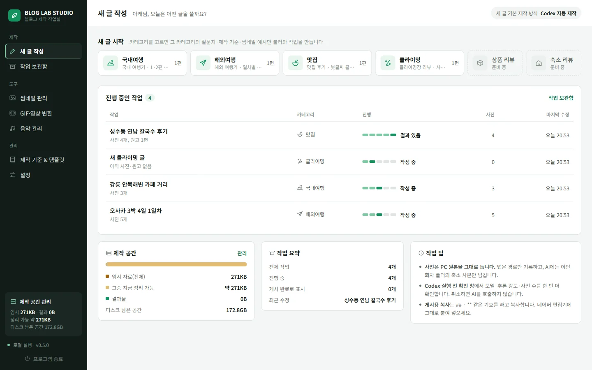

BLOG LAB STUDIO
AI 기반 개인 블로그 콘텐츠 제작 워크스테이션
2026.11.25–28 · 안정 버전 v0.6.2 · 기획, 시스템 설계, 구현 및 검수
여행과 맛집 기록을 쓸 때마다 질문지, 사진 순서, 썸네일 후보를 따로 정리했습니다. 이 프로그램은 한 회차의 자료와 결과를 한곳에서 찾아볼 수 있게 만든 개인용 도구입니다.
블로그 글 한 편에 필요한 자료를 모으다

여행기 한 편을 시작할 때 Excel 질문지, 사진 순서, 프롬프트, 썸네일 예시를 다시 모았다. 연재가 여러 편으로 나뉘면 어느 원고와 사진이 같은 편인지도 사람이 맞춰야 했다.
제작 단위를 ‘작업 → 회차 → 편’으로 나눴다. 카테고리를 고르면 그 글에 필요한 질문지와 예시를 모으고, 사용자는 방문 정보와 사진을 입력한다. 제작 이후에도 같은 작업에서 게시 상태와 사용한 음악을 찾을 수 있다.
국내여행·해외여행·맛집·클라이밍 네 카테고리를 운영한다. 다음 확장 목표는 사진과 영상의 순서, 확정한 원고를 네이버 클립 등 숏폼 편집에 재사용하는 것이다. 자막·숏폼 자동 편집은 기획 단계다.
회차마다 제작 결과를 판정하다

답변·사진 목록·카테고리 기준을 회차별로 구성한다. 사용자가 Work에서 폴더를 열거나 앱에서 Codex 실행을 선택한다. CLI에는 지시문을 표준 입력으로 전달하고 JSONL 이벤트를 읽는다.
프로세스 종료 코드, 완료 이벤트, 편별 실제 결과를 함께 검사한다. 실행이 끝나도 파일이 빠지면 누락 범위를 표시한다. 형식 검수와 편집을 거친 뒤 승인한 결과를 저장한다.
취소 요청은 자식 프로세스까지 종료 상태를 확인한다. 끝났는지 확인되지 않으면 회차를 보호하고 재실행·정리를 막는다. 재시작 때 보호 기록을 읽어 이 판단을 이어간다.
사진 후보를 고르고 게시용 원고를 확인하다

D안 대시보드에서 카테고리를 고르면 해당 질문지로 들어간다. 사진 화면에서는 편과 순서를 배정하고 썸네일 후보를 확대해 고른다. Excel을 가져온 사용자는 비어 있는 필수 항목부터 확인할 수 있다.
제작 화면은 사용할 모델·추론 강도와 진행 로그를 보여준다. 결과 화면에서는 원고, 썸네일, 편별 검수 결과를 함께 확인한다. 게시용 원고를 복사한 뒤 저장 화면에서 최신 결과의 저장 여부를 확인한다.
보관함·음악·폴더·제작 공간 화면은 글을 완성한 뒤 쓰는 도구다. 특히 폴더 이동은 변경 예정 목록을 먼저 보여주고 사용자가 고른 항목을 처리한다.
파일이 바뀌면 ‘최신’의 기준도 바뀐다

① 반복 내보내기. 원고를 한 번 수정한 뒤 다시 저장하면 같은 내용의 세 번째 사본이 생겼다. 이름 충돌 사본 전체를 크기와 SHA-256으로 비교해 같은 파일을 최신으로 가리킨다. 회귀 테스트에서 세 번째 저장의 복사 목록이 비었다.
② 오래된 수정 후보. 요청 시점의 원고 버전·썸네일 ID·이미지 해시를 보관한다. 승인 직전에 다시 비교하고 충돌 항목은 보류한다. 과거 형식의 저장 기록은 저장 사본과 대조해 이미지 수정의 저장 필요 상태를 복구한다.
③ 폴더 이동. 이름 변경과 DB 경로 갱신 사이에 중단될 수 있다. 이동 전 의도를 기록하고 DB 업데이트 실패 시 원래 이름으로 되돌린다. 재시작 시 원래 위치와 목적지를 대조해 한쪽만 확인되면 정리하고, 양쪽 모두 있거나 없으면 수동 복구로 남긴다.
④ DB 이전. 자동 사본을 만든 뒤 스키마와 버전 변경을 한 트랜잭션으로 처리한다. 백업 파일 38개의 해시를 확인한 기록에는 원본 대비 데이터·참고자료 34개가 포함된다. 사본 리허설에서 작업 3개·사진 기록 107개·음악 기록 5개와 SQLite 무결성을 확인했다.
실제 블로그 적용과 안정화

실제 운영 기록에서 통영 가족여행 3편은 Work로, 강창구찹쌀진순대와 평창여행 각 1편은 Codex로 제작해 게시했다. 평창 썸네일은 제작 결과를 직접 등록했다. 이는 v0.4.x~v0.5.0 사용 사례다.
v0.6.2 개발 환경 기록은 Windows 140개 통과다. Linux 독립 검수는 138개 통과·실패 0개·환경 차이로 2개 건너뜀이다. 신규 회귀 9개는 v0.6.1에서 모두 실패하고 v0.6.2에서 모두 통과했다. JS 28개 문법과 제작 기준 16개·참고자료 20개 보존도 확인됐다.
main 병합 후 백업 사본으로 38개 API 응답과 작업 보관함을 확인했다. 실제 운영 DB 첫 이전과 OneDrive 동기화 중 이동은 미검증이다. 다음 제품 목표는 기존 사진·영상과 원고를 숏폼 편집에 활용하는 것이다.